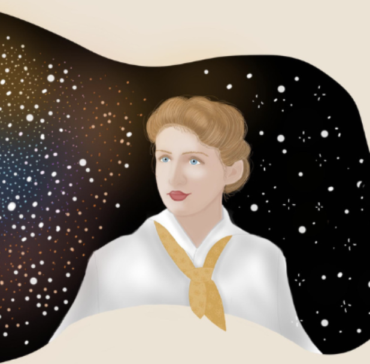

Anny Jump Cannon fue una chica que amaba mirar el cielo nocturno y estudiar astronomía a principios de 1900.

Después de la universidad, trabajó en Harvard con otras mujeres en un grupo llamado "las mujeres computadoras", clasificando estrellas por color y brillo intrínseco.
En esta actividad vas a aprender lo importante que fueron estos análisis y su posterior representación en los diagramas H-R para entender más tarde la evolución de las estrellas.